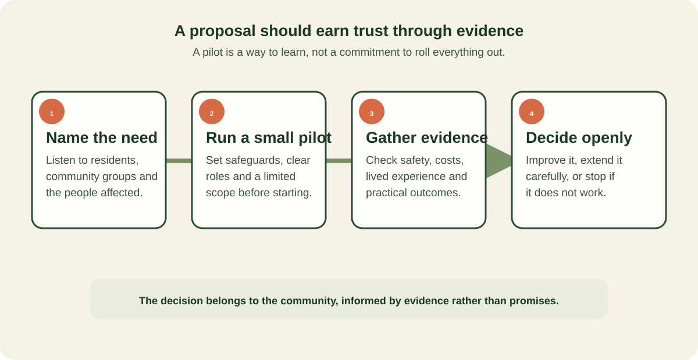

A careful way to decide
Good local decisions do not require certainty at the start. They require a clear need, a limited test, safeguards and an honest review of what happens.

How to read this proposal
This proposal was developed from direct on-the-ground research, living in a mobile camper setting, and investigating the real-world economics of regional resilience, vehicle maintenance, and distributed community infrastructure. To evaluate the initiative constructively, it helps to distinguish between its core foundations, operational modelling, and the broader economic baseline:
Foundational principles & lived design
Community grounds; dedicated support to acquire and maintain roadworthy mobile dwellings and tow vehicles; solar, battery, and amenity hubs; purposeful maker workshops; local digital edge infrastructure; and open-standard, user-owned data architecture. These represent the core design principles developed through lived experience on the ground.
Untested operational modelling
Specific loan amortisation structures, self-funding site thresholds, microgrid energy export arbitrage, and cooperative network access models are working hypotheses. They need to be calibrated, tested, and validated in a real-world regional demonstration rather than assumed as finished commercial solutions.
Evaluating against existing cost-per-case
Crucially, the operational modelling must be weighed against the real status quo: the enormous, recurring costs of unassisted hardship where no material infrastructure exists. When evaluated against acute emergency healthcare, psychiatric crisis beds, policing and court interventions, lost earning capacity from trauma, and diminished Quality of Life Years (QALY), catalytic civics infrastructure offers a preventative, wealth-building alternative to perpetual crisis expenditure.
The economic proposition & whole-of-system accounting
The core economic thesis inverts traditional landlordism by coupling physical shelter with generative physical and digital infrastructure. Commercial rooftop solar exports, battery grid arbitrage, and local edge compute services generate external site revenue, decoupling the ground's operational viability from high rental extraction. This allows grounds to maintain a $15/night ($105/week) concession floor (30% of commercial rates, or 17.5% of income) alongside standard nomad ($30–$35/night) and commercial ($50/night) tariffs.
To evaluate this model fairly, it cannot be measured against a hypothetical zero-cost baseline. In the absence of stable material infrastructure, society already pays massive per-person costs through fragmented emergency interventions. The table below contrasts the proposal's economic hypotheses with the true whole-of-system cost per case:
| Economic Hypothesis | Existing Cost-of-Inaction per Case | Evidence a Pilot Would Need to Verify |
|---|---|---|
| Generative Revenue Decoupling: Solar exports and edge compute cover baseline site capital and utility overheads. | Recurring public subsidies and deficit funding for temporary crisis accommodation facilities. | Net metered solar generation, feed-in revenues, battery arbitrage margins, and local compute service fees measured across all seasons. |
| Living Cost Viability ($15/night floor): Concession card holders live sustainably within ~$600/wk without entering crisis debt. | Acute healthcare presentations, emergency ambulance callouts, and psychiatric crisis admissions driven by severe housing stress. | Actual resident budgets, essential living expenses, vehicle upkeep reserves, and verified personal savings buffers. |
| Universal Safe Haven: Shelter remains secure even if residents are severely unwell or unable to contribute sweat equity. | Police interventions, court appearances, custodial detention, and punitive enforcement costs associated with rough sleeping and displacement. | Continuity of stay during illness, non-punitive tenancy records, and absence of eviction due to temporary loss of task capacity. |
| Trauma Recovery & Earning Capacity: Restored cognitive agency, vocational workshops, and digital pods rebuild livelihoods. | Permanent loss of human capital, intergenerational welfare dependency, and severe degradation in Quality-Adjusted Life Years (QALY). | Participation in maker projects, accredited skill attainment, business bootstrapping, and transition into independent employment. |
| Tiered Cross-Subsidisation: Full-fee tourists ($50/night) and nomads ($30–$35/night) support site reserves. | Loss of regional tourism spend and failure to capture mobile remote-worker economic contribution in regional towns. | Seasonal occupancy splits, revenue per site category, and net contribution to shared tooling and maintenance reserves. |
| Catalytic Public Spending: Co-investment in regional civics assets yields higher return than emergency motels. | State expenditures often exceeding $150–$300/night for short-term emergency hotel vouchers that produce zero enduring public assets. | Comparative cost per person-day between temporary crisis hotel vouchers and permanent, multi-use community ground infrastructure. |
This proposal establishes a dignified, asset-building alternative for transitional living; by addressing root material needs early, it substantially reduces acute whole-of-government expenditure across health, justice, and social services.
Decisions before a pilot
Where could a first ground work?
Identify a candidate with willing local partners. Assess existing users, ownership, amenities, roofs, energy demand, access, hazards, permissions and event commitments. No pilot location has been selected in the source.
Who is it for, and what does participation mean?
Define suitability, accessibility, length of stay, fees, residents' rights, support options and an exit pathway. Involve intended participants in the design.
Who pays, owns and operates?
Separate infrastructure funding, home or vehicle finance and ongoing operations. Identify who owns each asset, holds obligations and covers repairs or revenue shortfalls. The proposed public fund is not an announced funding commitment.
What is the smallest useful first stage?
Agree which basic facilities and support must work from day one. Later energy coordination, digital portability and international adaptation can be developed from evidence gathered at the first ground.
How would success—or failure—be recognised?
Set baseline measures, a review period and decision criteria with residents and local partners. Include cost overruns, poor living conditions, operational disruption and exclusion as possible findings to act on.
Sources & scope
- Community Grounds & Resilient Transitional Human Renewal StrategyPrimary concept source. Developed through lived experience, field research, and technical design outlining community grounds infrastructure and cooperative operating models.
- Solid-CSS-Databox (GitHub)Open-source reference architecture for containerised Community Solid Server (CSS) edge appliances, IoT telemetry and W3C Solid-interoperable local data pods.
- Solid-Databox specification project (GitHub)The draft specification, vocabulary and deployment toolkit behind the databox—habeas-data exchange between organisations and the people they serve.
- Solid Databox — project site & demosWorking in-browser demos of the per-program secure data vault described on the databox page: pods, ODRL policies, signed receipts, evidence ledger and program modules.
- Seraphim — consumer agent demoOpen-source reference implementation of the person's side of the exchange: credentials, records, corrections and consent held against a personal Solid pod.
- Decentralised Concession Attribution and Social Support InfrastructureInternal working document (ontology, architecture and STRIDE/LINDDUN threat model) behind the concession credentials component. Not yet published for external citation.
- Solid Project — About SolidOpen-standard specification enabling interoperability across diverse systems and technologies. Consulted 15 September 2026; not a proprietary specification for this project.
- UNICEF — Project ConnectExternal initiative referenced by the author. Included as context, not evidence of affiliation or delivery commitments.
These are initial concept pages for review. Detailed legal, engineering, funding and financial feasibility work remains to be done for a specific implementation.